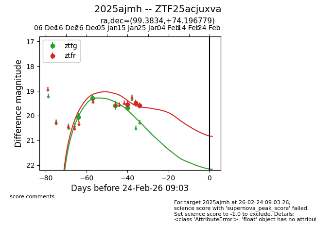
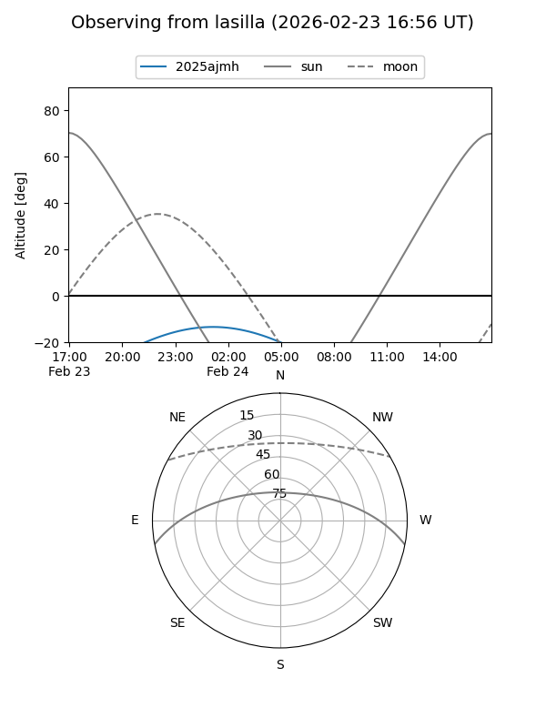
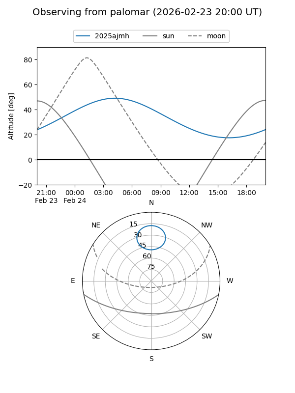
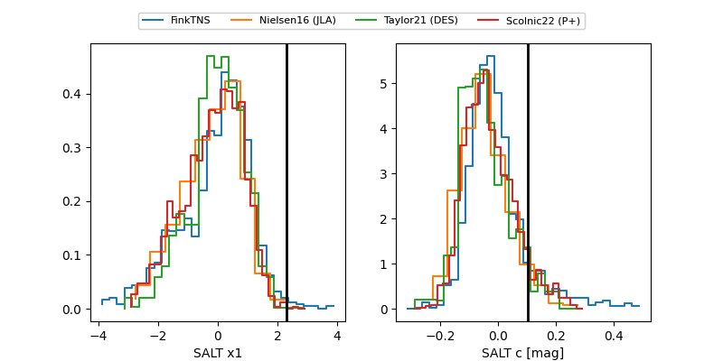

2025ajmh
Target 2025ajmh at 2026-01-22 11:06
Aliases and brokers:
FINK: link
Lasair: link
ALeRCE: link
TNS: link
YSE: link
alt names
ZTF25acjuxva (ztf,fink_ztf)
2025ajmh (tns,yse)
Coordinates:
equatorial (ra, dec) = 99.3834,+74.19678
equatorial (HMS+DMS) = 06:37:32.01,+74:11:48.41
galactic (l, b) = (140.3990,+25.09075)
Flags:
Photometry:
last ztfg=19.68, ztfr=19.59
4 ztfg, 3 ztfr detections
Lightcurve

Visibility


Additional plots
